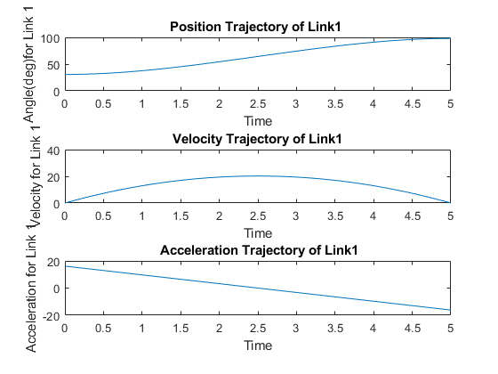
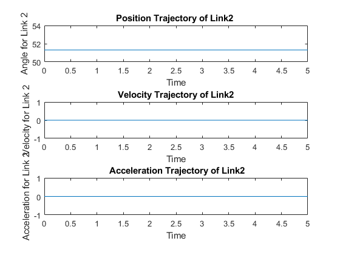
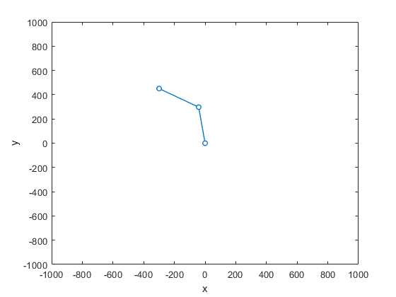

Contents
QUESTION 2
clear all;
close all;
clc;
Calculating values for joint angles q1 and q2 from the given data
[qi1,qi2] = Inv_Kin(300,450,300,300)
[qf1,qf2] = Inv_Kin(-300,450,300,300)
vi1 = 0;
vi2 = 0;
vf1 = 0;
vf2 = 0;
d1 = [qi1,qf1,vi1,vf1,0,5];
[qd1,vd1,ad1] = cubic(d1(1),d1(2),d1(3),d1(4),d1(5),d1(6));
d2 = [qi2,qf2,vi2,vf2,0,5];
[qd2,vd2,ad2] = cubic(d2(1),d2(2),d2(3),d2(4),d2(5),d2(6));
plots
t= linspace(0,5,100*5);
figure
subplot(3,1,1);
plot(t,qd1);
xlabel('Time');
ylabel('Angle(deg)for Link 1');
title('Position Trajectory of Link1 ');
subplot(3,1,2)
plot(t,vd1);
xlabel('Time');
ylabel('Velocity for Link 1');
title('Velocity Trajectory of Link1');
subplot(3,1,3)
plot(t,ad1);
xlabel('Time');
ylabel('Acceleration for Link 1');
title(' Acceleration Trajectory of Link1');
figure
subplot(3,1,1);
plot(t,qd2);
xlabel('Time');
ylabel('Angle for Link 2');
title('Position Trajectory of Link2 ');
subplot(3,1,2);
plot(t,vd2);
xlabel('Time');
ylabel('Velocity for Link 2');
title('Velocity Trajectory of Link2');
subplot(3,1,3);
plot(t,ad2);
xlabel('Time');
ylabel('Acceleration for Link 2');
title(' Acceleration Trajectory of Link2');
 
plotting the resultant end-effector path/trajectory i.e.track the position of the end-effector (task space) within the motion.
[x1,x2,y1,y2] =Forward_Kinematics(qd1,qd2,300,300);
Link1=[0 x1 y1];
Link2=[0 x2 y2];
figure
for i = 1:10:500
plot([0 x1(i) y1(i)],[0 x2(i) y2(i)],'-o','LineWidth',1,'MarkerSize',5,'MarkerFaceColor',[1 1 1]);
xlabel('x');
ylabel('y');
axis([-1000 1000 -1000 1000])
pause (0.01);
end
Fk function
function [x1,y1,x2,y2] = Forward_Kinematics(t1,t2,l1,l2)
x1 = l1*cosd(t1);
y1 = l1*sind(t1);
x2 = l1*cosd(t1) + l2*cosd(t1+t2);
y2 = l1*sind(t1) + l2*sind(t1+t2);
end

Cubic Function
function [qd,vd,ad] =cubic(qi, qf, vi,vf,ti,tf)
t = linspace(ti,tf,100*(tf-ti));
c = ones(size(t));
A=[1,ti, ti^2,ti^3;
0,1,2*ti,3*ti^2;
1,tf, tf^2,tf^3;
0,1,2*tf,3*tf^2];
B=[qi;vi;qf;vf];
a=A\B;
qd = a(1).*c + a(2).*t +a(3).*t.^2 + a(4).*t.^3 ;
vd = a(2).*c +2*a(3).*t +3*a(4).*t.^2 ;
ad = 2*a(3).*c + 6*a(4).*t;
end
IK function
function [q1,q2] = Inv_Kin(x2,y2,l1,l2)
D = (((x2^2+y2^2)-(l1^2+l2^2))/(2*l2*l1));
q2 = atan2d(sind(acosd(D)), D);
q1 = atan2d(y2,x2) - atan2d(l2*sind(acosd(D)),(l1+l2*(D)));
end
qi1 =
30.6510
qi2 =
51.3178
qf1 =
98.0312
qf2 =
51.3178